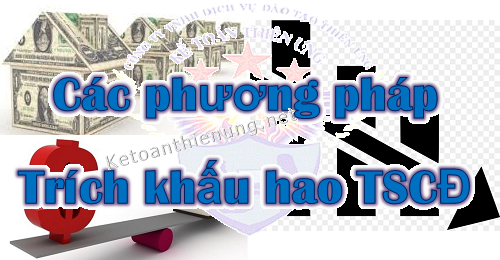

Quy định về khấu hao Tài sản cố định mới nhất; Các phương pháp khấu hao TSCĐ, ưu nhược điểm của các phương pháp trích khấu hao Tài sản cố định đó.
I. Các phương pháp trích khấu hao TSCĐ:
Căn cứ theo điều 13 Thông tư 45/2013/TT-BTC của Bộ tài chính quy định có 3 Phương pháp trích khấu hao tài sản cố định cụ thể như sau:
a) Phương pháp khấu hao đường thẳng.
b) Phương pháp khấu hao theo số dư giảm dần có điều chỉnh.
c) Phương pháp khấu hao theo số lượng, khối lượng sản phẩm.
=> Căn cứ khả năng đáp ứng các điều kiện áp dụng quy định cho từng phương pháp trích khấu hao TSCĐ -> Doanh nghiệp được lựa chọn các phương pháp trích khấu hao phù hợp với từng loại tài sản cố định của doanh nghiệp.
-----------------------------------------------------------------------------
II. Quy định về các phương kháp khấu hao TSCĐ:
1) Phương pháp khấu hao đường thẳng là phương pháp trích khấu hao theo mức tính ổn định từng năm vào chi phí sản xuất kinh doanh của doanh nghiệp của tài sản cố định tham gia vào hoạt động kinh doanh.
-> Phương pháp này được nhiều Doanh nghiệp lựu chọn áp dụng.
Chi tiết: Cách tính khấu hao TSCĐ theo đường thẳng.
- Doanh nghiệp hoạt động có hiệu quả kinh tế cao được khấu hao nhanh nhưng tối đa không quá 2 lần mức khấu hao xác định theo phương pháp đường thẳng để nhanh chóng đổi mới công nghệ.
Tài sản cố định tham gia vào hoạt động kinh doanh được trích khấu hao nhanh là: Máy móc, thiết bị; dụng cụ làm việc đo lường, thí nghiệm; thiết bị và phương tiện vận tải; dụng cụ quản lý; súc vật, vườn cây lâu năm.
Khi thực hiện trích khấu hao nhanh, doanh nghiệp phải đảm bảo kinh doanh có lãi.
Trường hợp doanh nghiệp trích khấu hao nhanh vượt 2 lần mức quy định tại khung thời gian sử dụng tài sản cố định nêu tại Phụ lục 1 kèm theo Thông tư 45, thì phần trích vượt mức khấu hao nhanh (quá 2 lần) không được tính vào chi phí hợp lý khi tính thuế thu nhập trong kỳ.
Chi tiết: Quy định về trích khấu hao nhanh.
---------------------------------------------------------------------------
2) Phương pháp khấu hao theo số dư giảm dần có điều chỉnh:
Phương pháp khấu hao theo số dư giảm dần có điều chỉnh được áp dụng đối với các doanh nghiệp thuộc các lĩnh vực có công nghệ đòi hỏi phải thay đổi, phát triển nhanh.
TSCĐ tham gia vào hoạt động kinh doanh được trích khấu hao theo phương pháp số dư giảm dần có điều chỉnh phải thoả mãn đồng thời các điều kiện sau:
- Là tài sản cố định đầu tư mới (chưa qua sử dụng);
- Là các loại máy móc, thiết bị; dụng cụ làm việc đo lường, thí nghiệm.
Chi tiết: Cách tính khấu hao TSCĐ theo số dư giảm dần có điều chỉnh.
-----------------------------------------------------------------------------
3) Phương pháp khấu hao theo số lượng, khối lượng sản phẩm:
Tài sản cố định tham gia vào hoạt động kinh doanh được trích khấu hao theo phương pháp này là các loại máy móc, thiết bị thỏa mãn đồng thời các điều kiện sau:
- Trực tiếp liên quan đến việc sản xuất sản phẩm;
- Xác định được tổng số lượng, khối lượng sản phẩm sản xuất theo công suất thiết kế của tài sản cố định;
- Công suất sử dụng thực tế bình quân tháng trong năm tài chính không thấp hơn 100% công suất thiết kế.
Chi tiết: Cách tính khấu hao TSCĐ theo sản lượng.
-------------------------------------------------------------------------------
III. Chú ý:
- Doanh nghiệp tự quyết định phương pháp trích khấu hao, thời gian trích khấu hao TSCĐ theo quy định tại Thông tư 45 này và phải thông báo với cơ quan thuế trực tiếp quản lý trước khi bắt đầu thực hiện.
Xem thêm: Mẫu đăng ký trích khấu hao TSCĐ.
- Phương pháp trích khấu hao áp dụng cho từng TSCĐ mà doanh nghiệp đã lựa chọn và thông báo cho cơ quan thuế trực tiếp quản lý phải được thực hiện nhất quán trong suốt quá trình sử dụng TSCĐ.
-> Trường hợp đặc biệt cần thay đổi phương pháp trích khấu hao, doanh nghiệp phải giải trình rõ sự thay đổi về cách thức sử dụng TSCĐ để đem lại lợi ích kinh tế cho doanh nghiệp.
-> Mỗi tài sản cố định chỉ được phép thay đổi một lần phương pháp trích khấu hao trong quá trình sử dụng và phải thông báo bằng văn bản cho cơ quan thuế quản lý trực tiếp.
----------------------------------------------------------------------------
